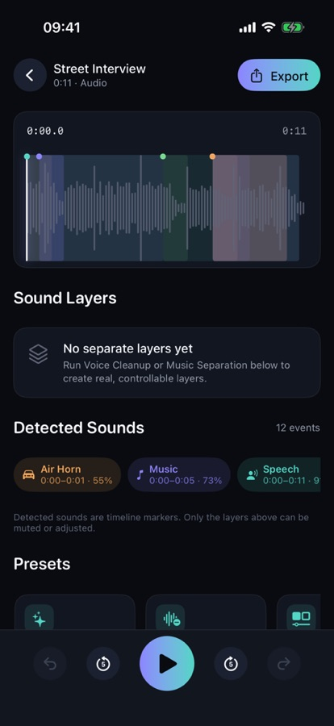
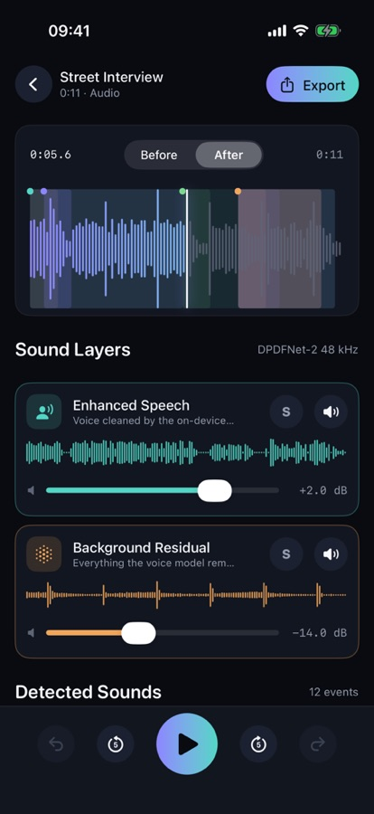
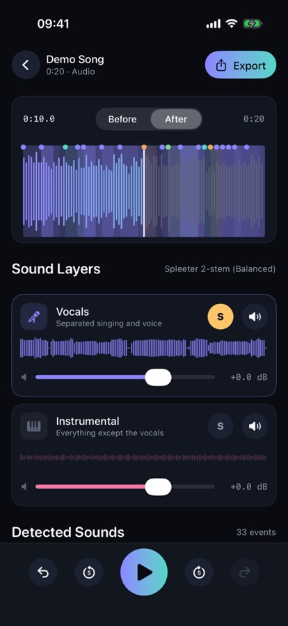

iPhone · iPad · Android
SoundLayers
Every sound. Your control. Clean noisy voice recordings, separate vocals from music and edit the sound of your videos — with AI that runs entirely on your device.
- AI Voice Cleanup with real, adjustable layers
- Vocal and instrumental separation
- On-device sound detection on the timeline
- EQ, dynamics, before/after, undo/redo
- Audio and video export — private and offline


